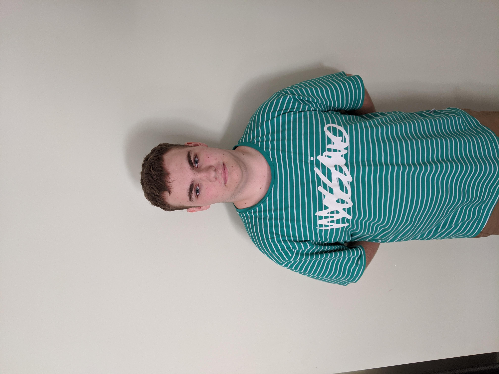

I am a first year student in Bachelor of IT. I have always had an interest in the field of IT and which really began to grow during my high school years in which I took multiple courses in IT. As it begins to become more integrated into the lives of the general public I want to be at the head of that change. To help make the life of the average person easier. .
I find my strength in it to mainly be focused around the field of programming and writing code and html it's the area of the project I can see myself most focused on doing and would like to do the most.
My weak areas would be communication and time management as I tend to leave work until late to complete it which would be unfair on the team so I will need to communicate with them and make sure I am completing work on time and to a standard the team can be happy with. With this project I would like to become a better teammate who is able to communicate with their team in a consistent manner and not just when asked a question.
A challenge I think I will face will include the actual design of the project as I am not the best at designing a simple project as I tend to want to continue to add extra features until it becomes too bloated and complex and the vision strays from what the project was originally intended to be. In this project I see myself doing mostly coding tasks but I am willing to do any task the team needs from me.
